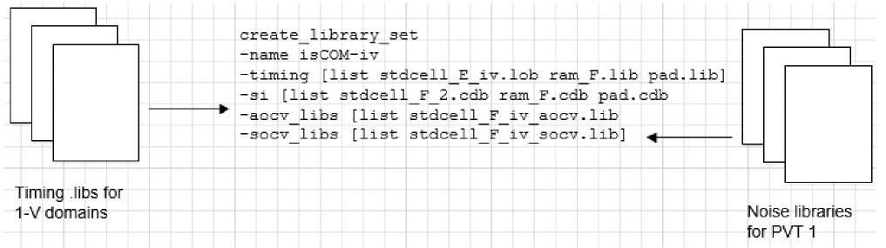
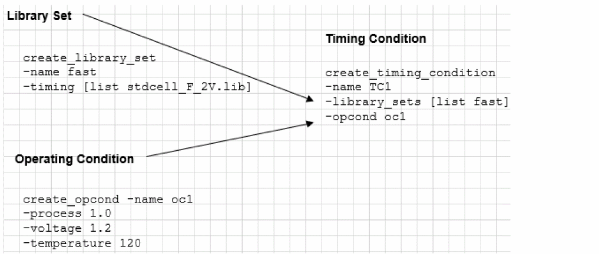

Library Sets
Creating Library Sets
Complex designs might require the specification of multiple library files to define all of the standard cells, memory devices, pads, and so forth, included in the design. Different library sets can be defined to provide uniquely characterized libraries for each delay corner or power domain.
Library sets allow a group of library files to be treated as a single entity so that higher-level descriptions (delay corners) can simply refer to the library configuration by name. A library set consists of timing libraries and can also include cdB/UDN models, AOCV, and SOCV libraries, which are supported through various options of the create_library_set command.
For details on UDN syntax, refer to the cdB Noise Library Format section in the Noise Library Characterization chapter of the make_cdB Noise Characterizer User Guide.
For more information on the UDN model, refer to the User-Defined Noise Model - An Overview section in the Noise Library Characterization chapter of the make_cdB Noise Characterizer User Guide.
The same library set can be referenced multiple times by different delay corners.
To create a library set, use the following command:
create_library_set
Flow Library Requirements
Timing libraries must be read into the system first, using the read_libs command. If you want to create a library set that includes cdB libraries, they also must be read into the system first, using the read_libs -noise_libs command. This same flow is adopted in single-mode single-corner (SMSC) analysis.
The order in which you define timing libraries is important. The software considers the first library in the list as the master library, with successive libraries having low priority.
The library sets can be created only after the top module is set. The following figure shows the creation of a library set that associates timing libraries and cdB libraries with a nominal voltage of 1 volt, with the library name COM-1V.
Figure -2 Creation of Library Sets

* Either AOCV or SOCV libraries can be specified at a time. The AOCV and SOCV files can also be added to the library set by either -aocv [list aocv1.lib aocv2.lib] or –socv [list socv1.lib socv2.lib] in the create_library_set settings.
create_library_set -timing parameter and interpolate a set of timing libraries to perform IR-drop aware delay calculation.Updating Library Sets
To change the timing and cdB library files for an existing library set, use the following command:
You can update a library set in the GUI mode by using the following methods:
Click the File tab and select Configure MMMC. A new window opens, double-click on one of the library set objects, where the timing library files need to be updated. A new terminal will open that allows you to add or delete timing library files. After updating the files, click on Apply and OK to save the changes.
Click the Timing & SI tab and select MMMC Browser. Select the library set and double-click on one of the library sets where the timing library files need to be updated. A new terminal will open where you can add or delete timing library files. After updating the files, click on Apply and OK to save the changes.
Note:- It may not be necessary to update a library set, but Timing/SI libraries under a library set can be updated.
-
You can use the
update_library_setcommand or the Edit Library Set option (in GUI Mode), before (or any time later) the multi-mode multi-corner views are loaded into the design. Once the views are loaded, any change in the library set (using theupdate_library_setcommand (, or Edit Library Set form) will reset the timing, RC data, and delay corner settings for all the analysis views.
Defining Timing Conditions
You can define new operating/timing conditions using the create_timing_condition command. This command creates a set of virtual operating conditions in the specified library.
For example, the following command creates a timing condition called TC1 for the library set fast and for the virtual operating condition oc1:
create_timing_condition -name TC1 -library_sets [list fast] -opcond oc1
Figure -3 Define timing conditions

Return to top